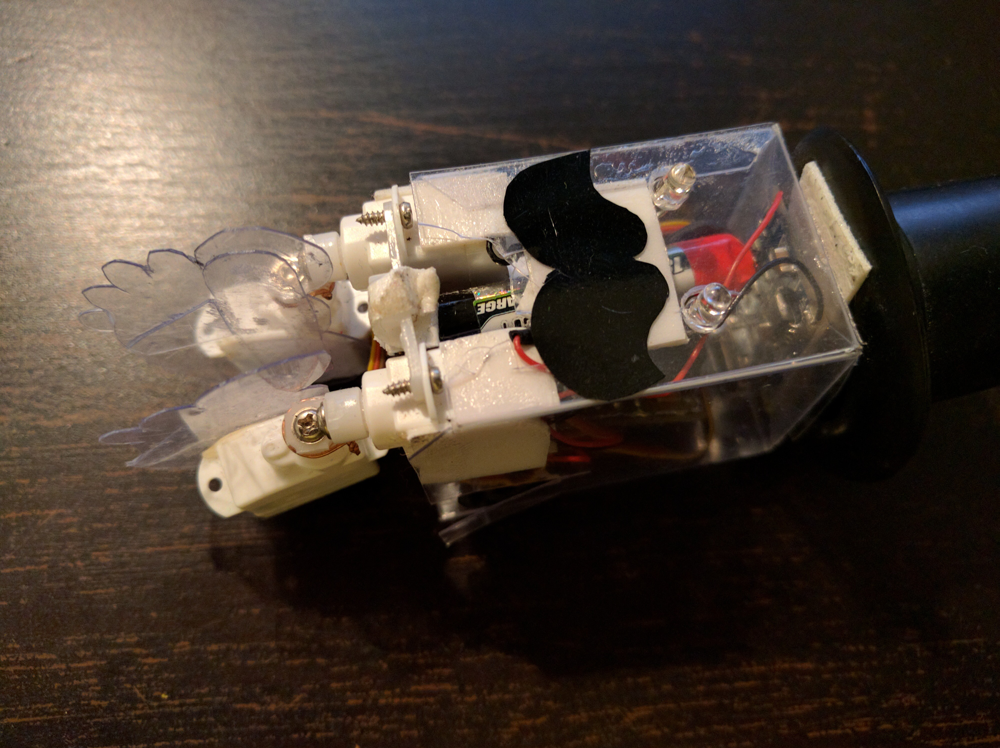
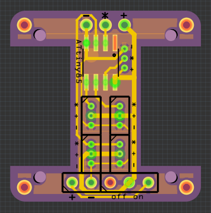
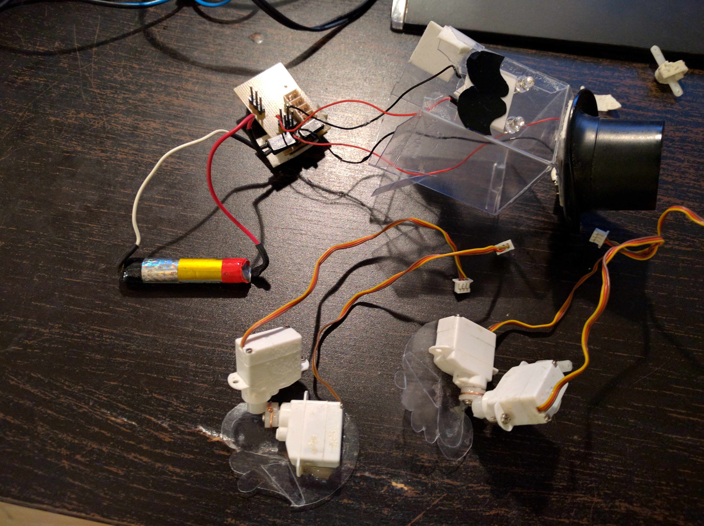
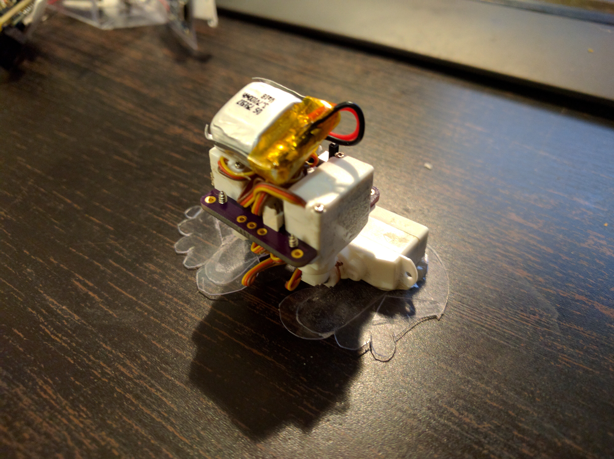

Ressurection¶
Published on 2016-12-29 in µBob biped robot.
I really wanted to enter one of my robots into the 1kB contest, but unfortunately the inverse kinematics calculations result in quite some bit of code. I tried to use some pretty neat algorithms to get around that (see https://hackaday.io/project/6050-tote/log/50664-cordic ), but in the end there is just too much happening on thet 8-bit microcontroller. Switching to a 32-bit microcontroller would probably helped, but then there is the size of all the HAL libraries and such – it would probably come down to about the same, or worse. So I looked at the shelf on which my robots are standing, and saw µBob. It has hard-coded gait, so there should be no problem with calculations. However, it used an ESP8266, and that’s again a lot of code in the SDK/Lua/MicroPython.
The robot also got quite beaten up on the last few conferences and maker fairs it has visited. The distance sensor never worked, the wires got loose, the battery inside shifted and changed its center of gravity, the feet lost some of the fingers, and the power switch is in a place that is really awkward to reach. So I decided to recycle the parts and make a new robot.
Time to re-build this robot again, with a little bit more of proper construction. I started with the PCB, because you have to wait for them so long. So I made this:
The two big empty spaces are for attaching the servos. There is also room for a power switch and a battery connector, and a footprint for an ATtiny85. I got two pins free, so I’ve broken them out into some extra headers.Once the PCBs arrived, I quickly assembled one, and started to program the attiny. That took whole day, because for some reason the programming would fail at various stages with very strange results. Lowering the clock speed of the programmer, adding some jumpers and additional options would help sometimes and then break again later. In the end it turned out that the wires that I soldered to my programming clip came off, and weren’t giving a good connection.
Next, I needed some code to drive the servos. Unfortunately, I couldn’t use the code from Mechatronic Ears , because this time I needed to drive 3 servos at once (actually 4, but two of them share a common signal). So I looked around and found a servo library for the ATtiny85 . It was too big for my purposes, but I used the ideas from it to write my own, that’s about 512 bytes (and probably can be further optimized).
Once I had that, I disassembled the poor µBob, and removed its legs:
Then I attached the servos to the new PCB, with a programmed ATtiny85 and a smaller battery (from those small quadcopters):
The current status: the legs are just moving back and forth for now (testing the servos). Next, I will need some simple codo to make it move into poses, and then maybe I will attach a distance sensor and add some code for reading the ADC.